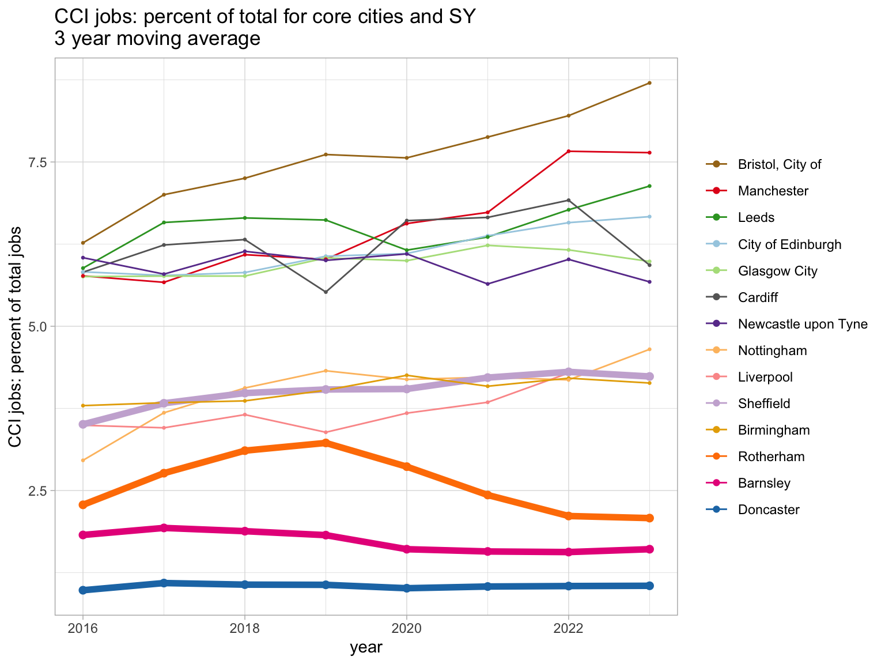
South Yorkshire creative & cultural industries: data from BRES and Companies House (October 2025)
Introduction
This web report examines data for Sheffield, Barnsley, Doncaster and Rotherham for sectors that are part of the UK Industrial Strategy definition of the creative and cultural industries (CCI). (See below for more info on the Industrial Strategy.)
As well as a short overview of the jobs and GVA history of South Yorkshire for CCI, each place is examined using location quotient (LQ) plots, placing them in the context of the UK’s core cities.
For the LQ analysis, two data sources with different strengths and weaknesses are used, to triangulate a fuller picture:
Business Register and Employment Survey (BRES) from 2015 to 2024, job counts. (2024 data was released 28th October.) The survey captures larger firms and their related sites, as well as smaller firms, but sample sizes become small at granular levels, so it can miss the full picture and is volatile between years.
Companies House (CH) firm level data, scraped for accounts submitted between September 2024 and end of September 2025. CH data’s main weakness: it records only firms HQ’d in South Yorkshire. But it captures a sizeable proportion of economic activity, and can often indicate (comparing to BRES) which sectors are more ‘home grown’ (a high CH / BRES ratio) and sometimes pick up on jobs BRES misses, as it’s not sample based. Here, it can also only compare job counts from when accounts were submitted and a year previously.
These are the following sections (see also table of contents on the right):
Some headlines from the analysis follow next.
Existing UKRI CCI clusters are listed.
An overview of the UK Industrial Strategy.
Data on the history of CCI in South Yorkshire (compared to core cities).
Bullet points on the location quotient results for the four places.
Full location quotient plot results.
Headlines
There’s a section below with bullet points on all the LQ results. Here are some headlines from those (as well as the other data sources used below).
Unsurprisingly, Sheffield dominates CCI jobs in South Yorkshire. Some clusters exist in Barnsley, Doncaster and Rotherham but proportions are lower. In the LQ plots, other core cities have clear specialisms (high LQs in sectors like interactive leisure and games); Sheffield and South Yorkshire are more mixed.
Sound recording and music publishing (SIC 592) show up strongly in both BRES and Companies House data in Sheffield. Though not a large proportion of jobs (BRES had 300 pre-COVID; CH has 130 as of September 2025), Sheffield is high compared to the LQ positions for the other core cities, suggesting a strong cluster underneath. Companies House picks up on more SIC 592 jobs than BRES does - the ‘home grown’ factor may be high. As Neil McSweeney’s in-depth report shows, it is important to understand where the strands of economic connection go. He finds the music sector in Sheffield connects to “40 different SIC codes across 11 economic categories”, looking at Companies House firms. The relatively high LQ concentration found in Sheffield is likely a reflection of that integration.
The ‘creative arts / entertainment’ SIC (90) is broad, covering performing arts and art (including facilities). SIC 90 picks up on high creative/culture concentration in Sheffield, which continues to grow. There’s also SIC 90 growth in Barnsley and Doncaster, though LQ < 1 (less concentrated than GB average). This broad sector doesn’t vary hugely in concentration across either core cities or the four local authorities - it is fairly evenly spread across these places. But it’s a sizeable chunk of jobs.
Given SIC 90 is so broad, this section below unpacks details for the four 5-digit SIC subsectors underneath that SIC code, including an interactive plot of firms within South Yorkshire from Companies House. In the BRES jobs data, Sheffield shows up more clearly as relatively strong and growing compared to other core cities in everything here except arts facilities. The Companies House data picks up on performing arts support firms in Barnsley (topping that LQ list, 89 total employees in the most recent year).
This SIC 90 subsector interactive plot, using Companies House data, shows some of the demographics of firms in these sectors (for those HQ’d in the region). It gives details of individual firms if you hover over points. Sheffield and Barnsley here have the larger, more established firms. Rotherham appears to have fewer older organisations. Most are micro-firms, as is true of all Companies House data.
Two ICT sectors - computer programming (6201) and consultancy (6202) - have a similar story in all four SY places: not as concentrated as other core cities, but all growing in their job proportions (previous analysis shows ICT as one of South Yorkshire’s strongest growth sectors, significantly ahead of other places in the UK). The issue is understanding what proportion of these sectors is CCI-connected.
Architecture is both high-LQ and growing in Sheffield, and has a strong showing in Doncaster as well. In Sheffield, this sector is around 1 in 200 jobs.
In Rotherham, there is also a small publishing cluster.
Though job numbers are low, Sheffield and Birmingham both stand out as jewellery specialists, with no other core city having an LQ above 1. (It would be good to have similarly in-depth knowledge on its deeper city and region connections).
For context, the plots for jobs and GVA over time show that Sheffield’s CCI concentration has been at or near the low end of core cities in recent years. Examining Arts Council spending, Sheffield is lowest by some way compared to other English core cities (see plot here) - both causal and symptomatic, most likely.
Existing (or recently ended) UKRI CCI clusters
Original projects:
- “Business of Fashion, Textiles and Technology” has centres in London, Cambs, Chelsea, Leeds, Loughborough. (“Future Fashion Factory” is a cluster based at Leeds University Institute of Textiles and Colour.)
- Creative Industries Policy and Evidence Centre (Newcastle University, with ‘Southern hub’): policy research+exchange across all CCI.
- Future Screens NI: “delivering expert technical skills, opportunity and growth across film and broadcast, animation, games and immersive technologies and industries in Northern Ireland.” (Queens and University of Ulster.)
- Creative informatics (Edinburgh): “Funding and development opportunities to creative individuals and organisations working in Edinburgh and Southeast Scotland that want to develop new products, businesses and experiences using data and data-driven technology.”
- InGame: R&D in Dundee’s games cluster.
- XR Stories (University of York): Extended reality research with industry, lab at York University.
More recent projects funded (Nov 2024 announcement):
- Music Futures in Liverpool.
- Createch Frontiers, Birmingham City, Coventry and Warwick Universities.
Funding period ended:
- Bath/Bristol Creative R&D: screen / performance / publishing (ended 2024)
- Clwstwr in Cardiff (ended): “Creates platforms for independent companies, SMEs, micro-businesses and freelancers to compete with global media companies.” (Some Bath/Bristol overlap)
- StoryFutures (Surrey, Royal Holloway University, ended): “placing innovative storytelling at the heart of the next generation of immersive technologies and experiences.”
UK Industrial Strategy Linkage
The UK Industrial Strategy was released in 2025, with accompanying plans for 6 out of the 8 target “IS-8” sectors. It also has a sector definition list that provides SIC codes being targeted - top level sectors and ‘frontier’ subsectors (a few of which overlap; most do not). These range in specificity between 2 digit and 5 digit SIC codes.
As that webpage says, most of these SIC codes cannot capture the full range of possible firms the strategy aims to cover, and it also contains entire sections that SIC codes can’t cover at all - clean energy and certain digital sectors in particular. However, it does allow an analysis of which sectors are definitely within those industrial strategy categories.
Here, the SIC codes from the ‘creative industries’ industrial strategy list are used, broken down into ‘frontier’ and ‘other’ sectors. Two of these sectors overlap - creative frontier sectors 591 (film/tv) and 592 (sound/music) are also covered more broadly by SIC 59
Data: history of CCI jobs and GVA in South Yorkshire
The next two plots show Creative and Cultural Industries job counts and GVA as a proportion of the total, for the four South Yorkshire places and the UK’s core cities (Great Britain’s if BRES jobs data). These show structural change, not growth directly - how each place’s economic composition has changed over time.
South Yorkshire’s four places are indicated with thicker lines.
CCI jobs as a percent of the total for core cities and South Yorkshire
Here, job counts from BRES are summed for all industrial strategy creative SIC codes to find how the percent of South Yorkshire’s CCI jobs has changed over the data’s history, alongside Great Britain core cities for comparison.
BRES has data from 2015 to 2024. A 3 year running average is used here to smooth its volatility, so the most recent data point is showing the 2022-24 average.
Some things to note here:
Sheffield’s CCI job count is in a lower core city group with three others, percentage-wise: Birmingham, Liverpool and Nottingham.
In all core cities, CCI jobs as a proportion of each city’s total jobs has been climbing, including through COVID for most, though not all.
Barnsley, Doncaster and Rotherham are here for comparison, but are not similar to other core cities and so not too much should be read into their position here (same for the GVA plot below).
CCI GVA as a percent of the total for core cities and South Yorkshire
Economic output for CCI sectors has to use a slightly different sector list, as the regional GVA data only has ‘58-60’ and ‘90-91’ SIC codes at ITL3 level (the level that most closely matches local authorities).
But it’s close enough to give an indication of how CCI output has changed over time. While this data goes back much further, to 1998, it is show here for the same time range as the BRES data, for direct comparison.
- Out of the core cities, Sheffield and Tyneside (the ITL3 zone) have historically had the lowest proportion of their economies made up by CCI sectors. Sheffield looks to have bounced back from the pandemic better than a lot of other core cities.
- The deepest impact of the pandemic is visible in 2020, with differing paths after that point. For example, Barnsley’s CCI GVA steadily increases its proportion (though note, we don’t know from this plot what role other sectors shrinking may have had on this; in the above plot, job proportions seem to have stayed steady).
- Rotherham’s story looks similar in both these plots: declining job and GVA proportion for CCI sectors since the pandemic.
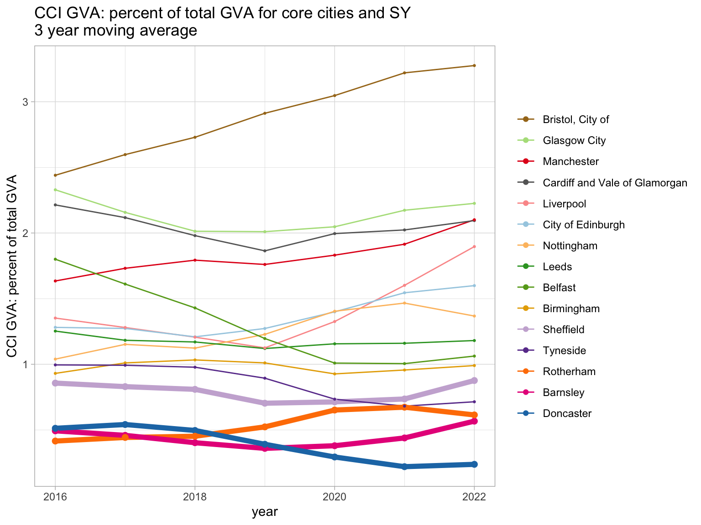
LQ plots for South Yorkshire’s four places
Bullet points from the LQ plots below
Sheffield:
SIC 90 (a broad ‘creative arts/entertainment’ category) is quite concentrated (LQ > 1) in Sheffield, and growing; interactives (62011) clearly growing but other core cities specialise more; both are 225 jobs in BRES / 0.5% of jobs. Companies House picks up on SIC 90 too, with about same jobs – meaning it’s very home grown. We can look at what firms those are.
Sound recording and music publishing show up strongly in both BRES and CH - more jobs in CH than BRES, so ‘home grown’ factor looks high, though number itself is between 100 to 130 across both. But LQs for core cities in this sector show Sheffield being towards the high end - close to highest in CH. In BRES numbers were much higher pre-COVID (300 recorded) and then dropped before climbing again.
Sheffield / Birmingham jewellery specialisms - those two cities far ahead of other core cities – but very small job counts.
The ICT story we know: computer programming + consultancy (two SICs: 6201, 6202) are growing strongly, but not LQ > 1. They’re large sectors, though: between them, 3900 jobs. (But we don’t know how many of those are specifically CCI.) In Companies House, ICT job count is a half to a third of BRES – many HQ’d in Sheffield but also many not.
Architecture is interesting, and comes up again in other places in South Yorkshire: in Sheffield, it’s growing, LQ > 1 and 1 in 200 jobs (875). Companies House has high job count here, again suggesting many home-grown / Sheffield based firms. Most other core cities have high LQs for this, meaning it’s lower in non-city places – this sector is concentrated in cities.
Barnsley:
The broad SIC 90 category is growing in concentration. Now at GB average and continuing. CH has more jobs here than BRES does – many firms based in Barnsley. Who?
For advertising, CH picks up on a lot of jobs that BRES misses – approaching 250 jobs, nearly 1%.
BRES has the two programming / consultancy SICs shrinking in concentration. CH shows same over the most recent year (though also indicates many HQ’d here).
Doncaster:
SIC 90 not large numbers but on a clear concentration growth path. CH job count > BRES, high home-grown factor.
Architectural – not large, but BRES does show Doncaster having a growing sector (160 jobs in latest 2024 BRES data).
As with other SY LAs, the two SICs for computer prog / consultancy are LQ < 1 but growing, with a recent pickup.
Rotherham:
Nothing very much picked up on for CCI frontier sectors here.
Again, though the two SICs for computer programming/consultancy is interesting – a mix of growth and shrinkage (moving from LQ > 1 to < 1 for consultancy) but 1.5% of Rotherham jobs in latest BRES.
There’s also a little publishing cluster showing in BRES that’s also growing.
LQ plot guide
The outputs below are location quotient plots for each of South Yorkshire’s local authorities, for “creative” industrial strategy SIC codes.
Core cities are again included for comparison.
- They are separated into industrial strategy ‘frontier’ sectors and the rest. Some are repeated, as the IndStrat definitions have two overlapping, nested categories (591 and 62011 are frontier sectors, but their parent sectors, 59 and 6201, are listed in the broader creative sectors; both are used here).
Here’s a guide to reading them:
- Location quotients for sectoral job proportions are shown for SY local authorities
- Sectors to the right of the centre line are more concentrated in this region when compared to the national average. (e.g. LQ = 10, it is 10x more concentrated)
- Green circles have been increasing in concentration over time (larger circles increasing the most)
- Red circles have been decreasing in concentration over time (larger circles decreasing the most)
- Black horizontal lines show the min and max of concentration in the data’s history (from 2015 to 2023)
- Circles and lines can be read together - for example, if a green circle is at the right of this line, sector job concentration has been increasing on average and is continuing.
- Companies House plots are just comparing job counts when accounts are submitted to the ‘last year’s employees’ figure from the same accounts - so they indicate how jobs have shifted since last accounts, but can’t show longer-term change.
- Per sector job counts and percent of the total local authority job count are shown on the right. These are useful to check sector size versus LQ - for example, a sector like jewellery can have a high LQ (as it does in Sheffield and Birmingham) with very low job counts, because there aren’t many jobs in this sector overall in Great Britain.
- Background squares are LQs for core cities. Core cities’ first two letters are used. Here’s a list of those, for reference:
| Core city | Abbreviation |
|---|---|
| Belfast | Be |
| Birmingham | Bi |
| Bristol | Br |
| Cardiff | Ca |
| City of Edinburgh | Ed |
| Glasgow | Gl |
| Leeds | Le |
| Liverpool | Li |
| Manchester | Ma |
| Newcastle upon Tyne | Ne |
| Nottingham | No |
| Sheffield | Sh |
LQs plots: frontier CCI vs other CCI sectors
SHEFFIELD
“Frontier” SIC sectors
BRES frontier sectors

Companies house frontier sectors

Other industrial strategy SIC sectors
BRES other sectors

Companies House other sectors

BARNSLEY
“Frontier” SIC sectors
BRES frontier sectors
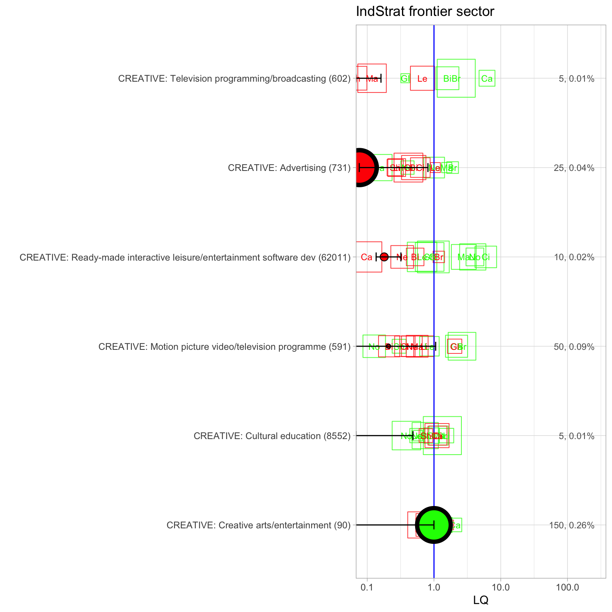
Companies house frontier sectors
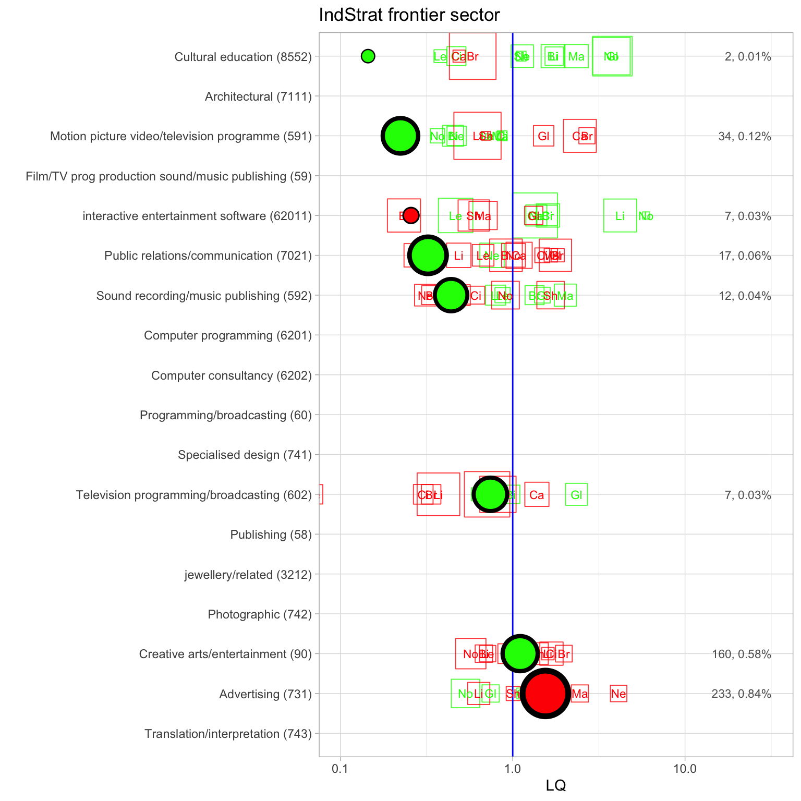
Other industrial strategy SIC sectors
BRES other sectors
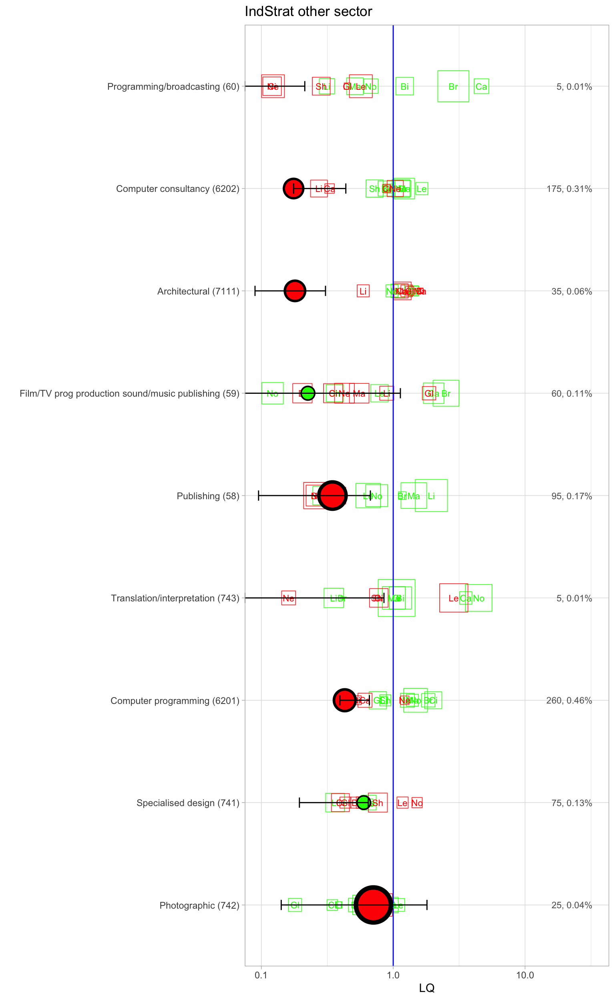
Companies House other sectors
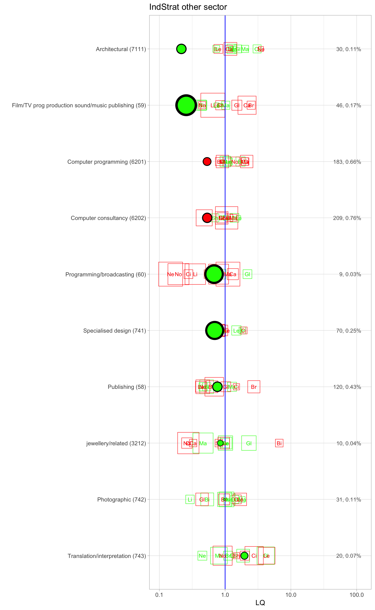
DONCASTER
“Frontier” SIC sectors
BRES frontier sectors
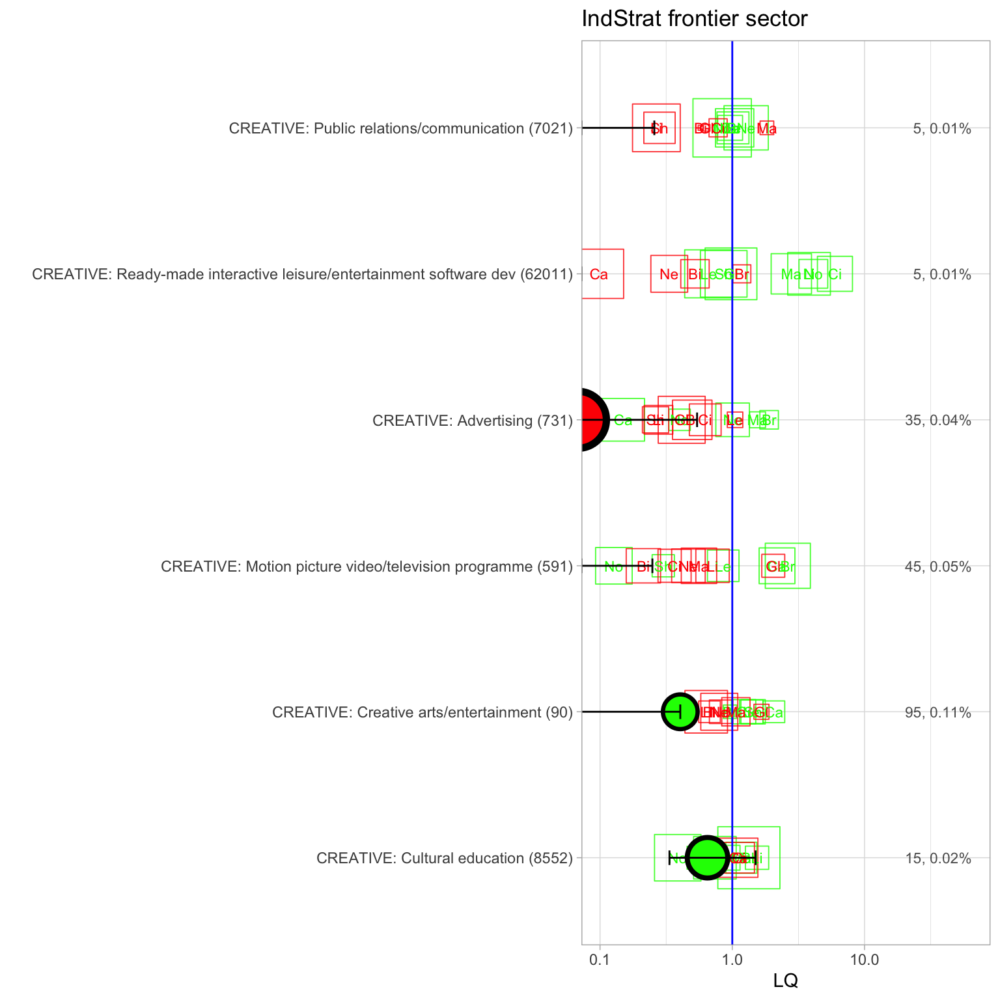
Companies house frontier sectors
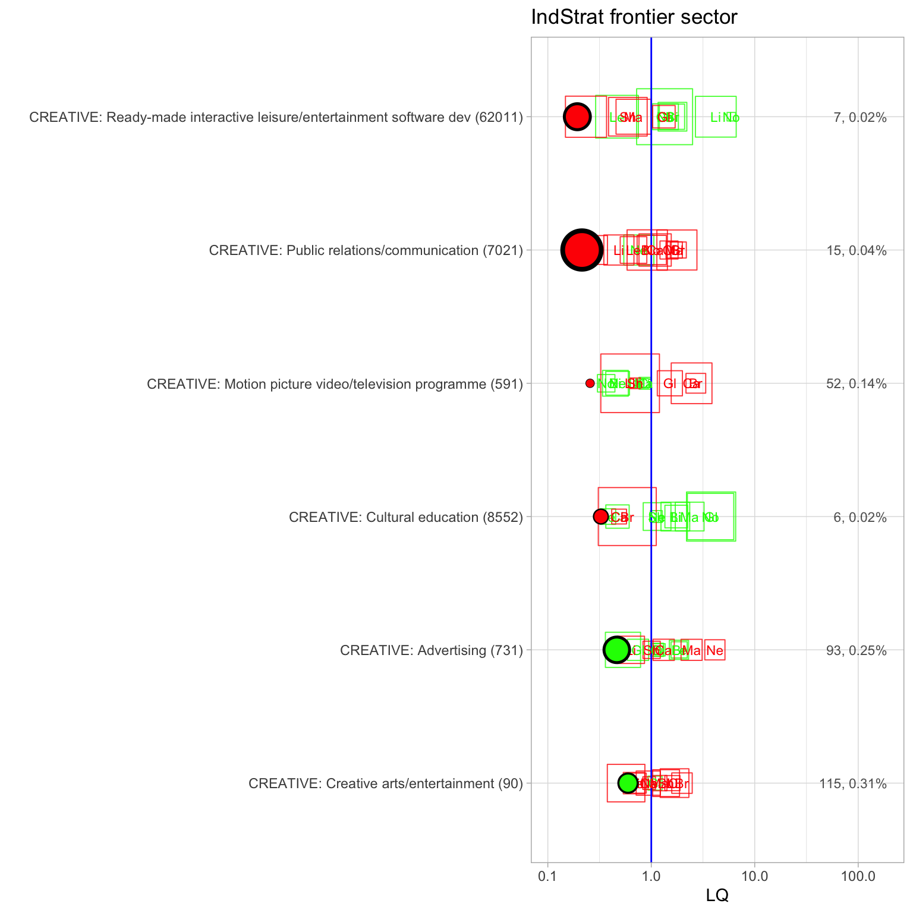
Other industrial strategy SIC sectors
BRES other sectors
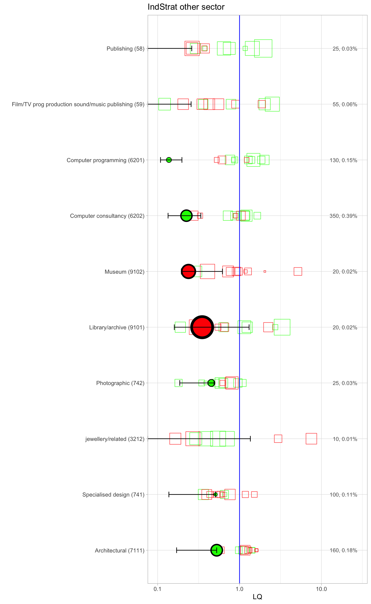
Companies House other sectors
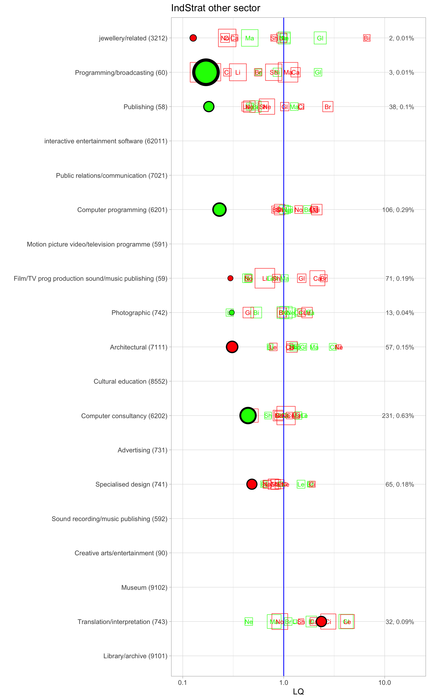
ROTHERHAM
“Frontier” SIC sectors
BRES frontier sectors
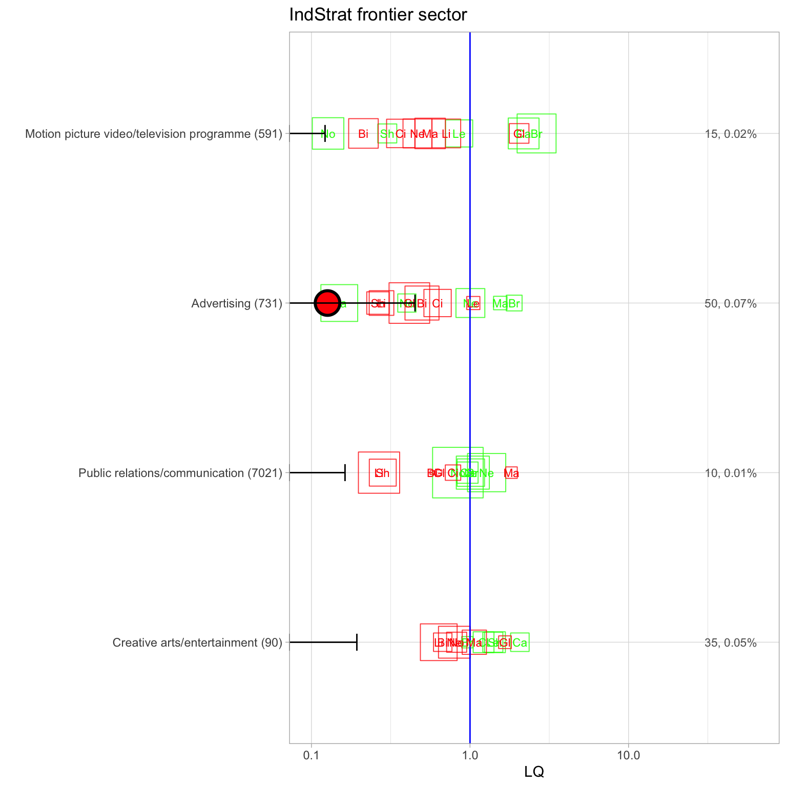
Companies house frontier sectors
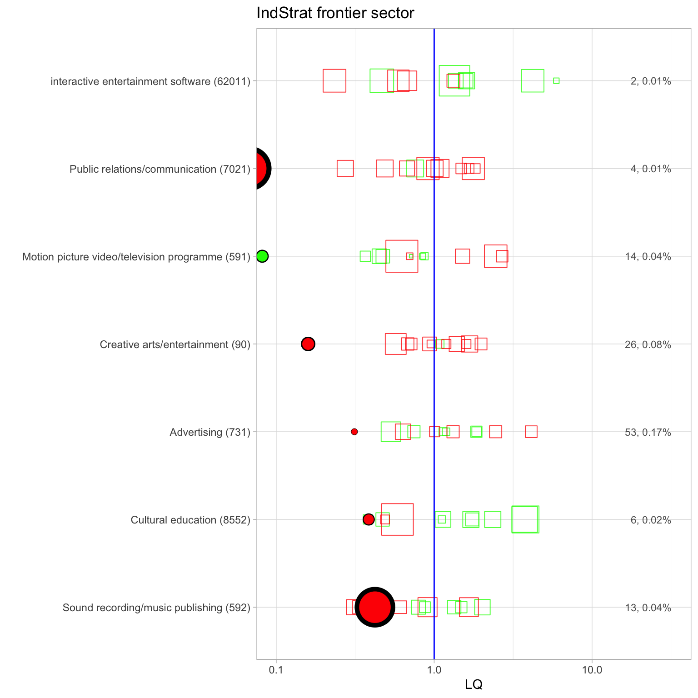
Other industrial strategy SIC sectors
BRES other sectors
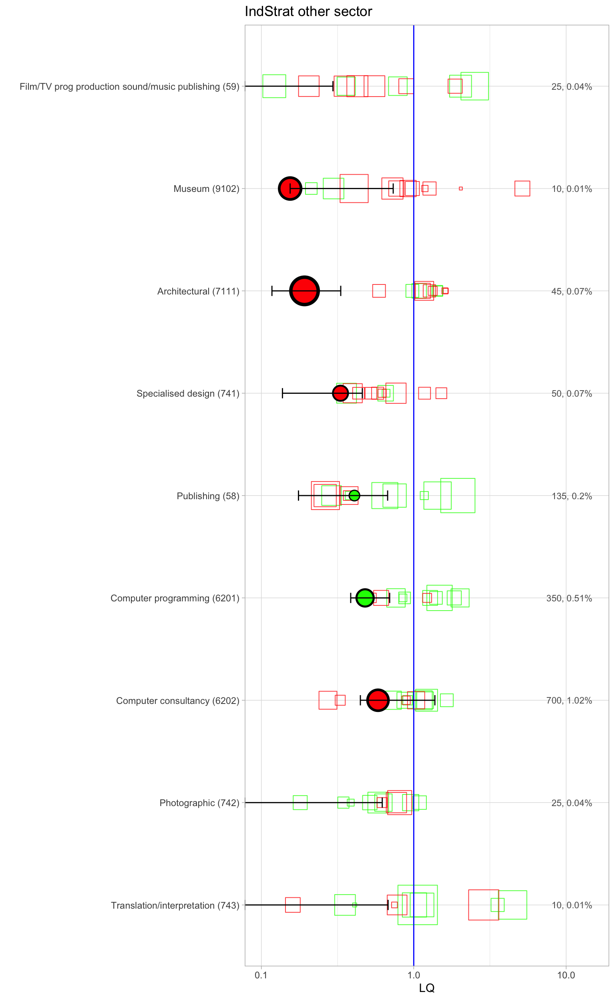
Companies House other sectors
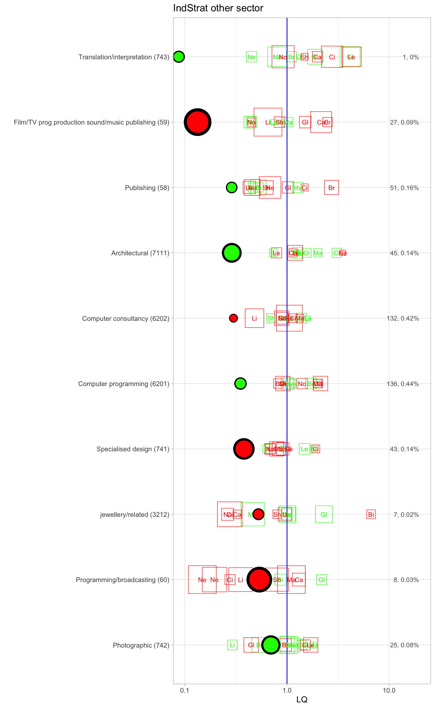
Closer look at SIC 90 (Arts/Entertainment/Recreation)
Outline
This section unpacks SIC 90 a little bit more. This 2-digit sector has only four 5 digit SIC codes nested beneath it. Those are:
- Class 90.01: Performing arts
- Class 90.02: Support activities to performing arts
- Class 90.03: Artistic creation
- Class 90.04: Operation of arts facilities
Below, each of South Yorkshire’s four places (in upper-case) are placed alongside core cities. Each plot looks at one of those four SIC 90 subsectors. Again, there are plots for BRES and Companies House jobs data separately - though the numbers in these don’t vary hugely, so Companies House data isn’t picking up on anything BRES has entirely missed (as it does in some other sectors).
After that, there is a section that provides and interactive plot of firms in these four subsectors, showing their age in years, and broken down by the four places. Hover for the firm name and its number of employees. Sheffield and Barnsley appear to have more established SY-HQd firms in these subsectors, compared to Doncaster and Rotherham.
BRES: four SIC 90 subsectors
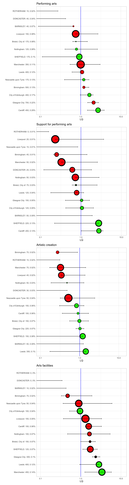
Companies house: four SIC 90 subsectors
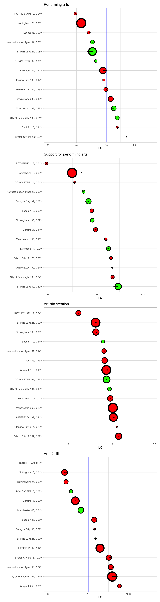
Companies House: interactive plot of individual firms for SIC 90 subsectors in South Yorkshire
- Hover for firm name and number of workers.
- Size of point reflects employee count.